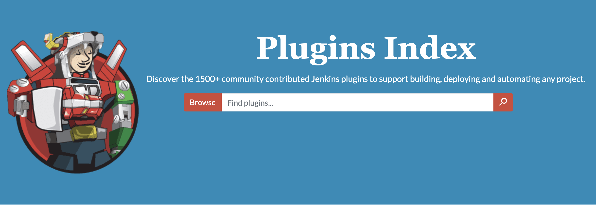
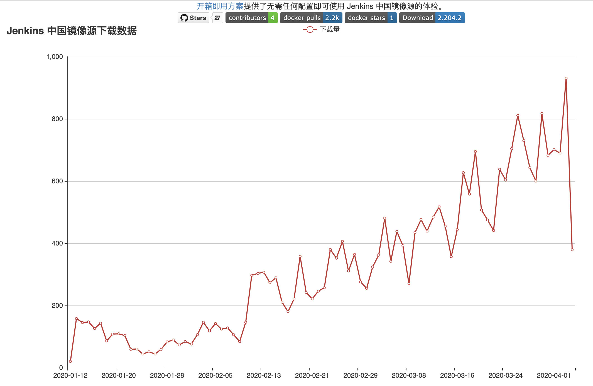
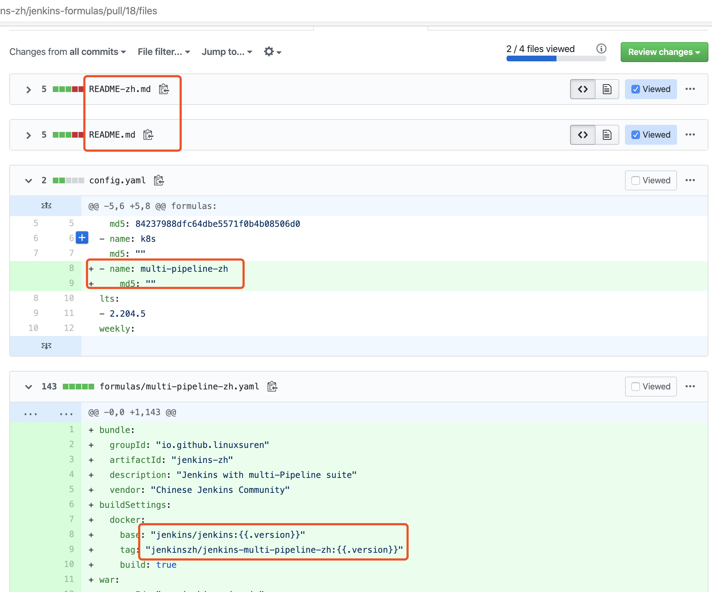

自定义 Jenkins 发行版就是这么简单
Jenkins 是一个由开源社区驱动的项目，拥有非常丰富的插件生态，任何人都可以根据社区给出的指南为之作出贡献，甚至是将自己开发的插件托管到 Jenkins 社区。从插件市场上能看到，到目前为止有超过1500个插件可供 Jenkins 的用户挑选。当我们走进 Jenkins 这个巨型超市时，有多少人曾经有过这样的感觉——看着琳瑯满目的商品，却完全无从下手？自由风格，流水线即代码，申明式流水线，多分支流水线，配置即代码，又有多少人被应接不暇的社区新概念搞得没了头绪？

让我们暂且不去关心其他语言的用户体验如何，单看 Jenkins 简体中文插件3万左右的下载量，就足以证明 Jenkins 中文本地化工作对很多用户是有意义的。在之前的一篇博文中，我们从改善用户下载、更新插件的角度出发，发布了 Jenkins 插件中心国内源。在此，需再次对清华大学开源镜像站等组织对开源项目的支持，让更多的人得以站在巨人的肩膀上前行。在过去的四个月的时间里，插件国内源的用户在逐步上升；用户检查更新插件的峰值为931次/天。

从上面的两个数据中，不难看出，还是有相当一部分用户还没有享受到插件国内源的益处。这可能有多个原因导致：文档不清晰、配置步骤繁杂、服务器不稳定等等。对于文档、配置等问题而言，一个杀手级的一个解决方案就是——不需要文档和配置。本文要介绍给大家的就是这么一种开箱即用的方案，就像乐高积木一样，而用户只需要提交一个订单（YAML 文件）就能拿到他所需要的 Jenkins 发行版。是的，作为用户，不仅不再需要配置国内源，甚至都不需要下载和配置插件。
Jenkins 自定义发行版项目，默认提供了几个常用的配方，并支持用户以 YAML 的格式提交配方。这里的配方，包括了发行版中 Jenkins Core 的版本、插件列表、插件配置、初始化脚本等等。一旦提交的配方 Pull Request 合并到 master 分支后，就可以自动地构建出来对应的 docker 镜像以及 jenkins.war 文件。如果 Jenkins 有了新版本的话，是否还需要重新提交配方请求呢？我们已经考虑到了这一点，一旦有新版本发布的话，会自动构建出来对应的发行版（也许会有一天的延迟）。大家如果喜欢这个方案的话，可以关注托管在码云或者 GitHub 上的项目。目前，Docker 镜像的下载量已经有3000+，心动不如行动，赶快试试吧！
现有的配方包括：
| 配方 | 镜像 |
|---|---|
| 配置即代码 + 简体中文 | jenkinszh/jenkins-zh:2.204.5 |
| 配置即代码 + 流水线 | jenkinszh/jenkins-pipeline:2.204.5 |
| 配置即代码 + 流水线 + K8s | jenkinszh/jenkins-k8s:2.204.5 |
| 多分支流水线 + BlueOcean | jenkinszh/blueocean-zh:2.204.5 |
| 多分支流水线（GitHub、GitLab、Bitbucket） | jenkinszh/jenkins-multi-pipeline-zh:2.204.5 |
上面的清单中没有你想要的？自己动手，丰衣足食。参考下图中的 Pull Request 来提交几个文本文件，就可以了。
